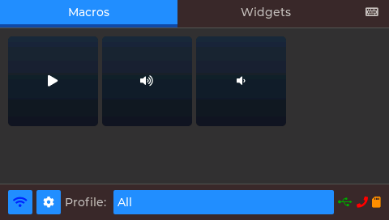
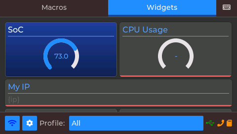
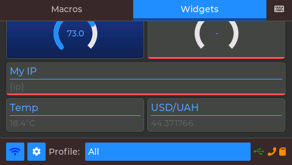
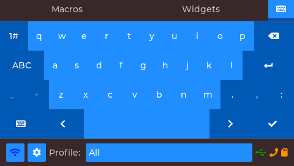
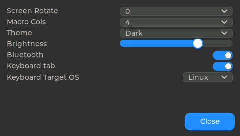
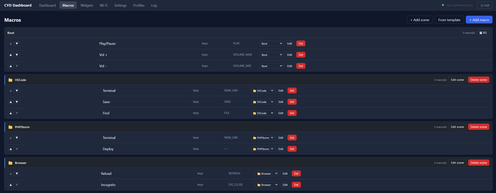
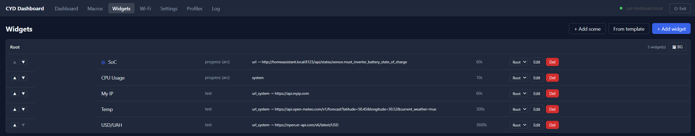
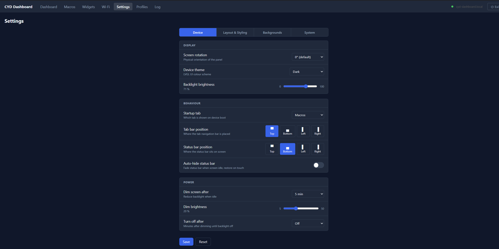

A touchscreen macro & widget dashboard for Sunton "Cheap Yellow Display" ESP32 boards, configured entirely from a browser.
Chromium-based browsers only for Web Flash (Chrome, Edge). Standalone flash page →
Everything runs on the display — no host app required.





Configure macros, widgets, profiles and settings from any browser on the same network.



Everything runs on the ESP32 — browser is only needed for configuration.
Keys, URL calls, commands, scene folders, toggles, multi-step actions — with per-button icons, colours and images.
Live tiles fed by URL polling (via browser or companion proxy) or host system metrics — grid and masonry layouts.
Group macros into scenes, switch profile sets on the fly, per-scene backgrounds, auto-switch based on the active app.
BLE keyboard (NimBLE), USB HID (S3/C3), or desktop companion relay — auto-selected by priority.
On-device LVGL keyboard sends live keypresses via the active HID backend; input-language switch button for Win / macOS / Linux.
Vue 3 SPA — open cyd-dashboard.local from any device on the same network, no app install needed.
Upload images from the web UI; auto-converted to device formats stored on microSD.
Firmware updates over the browser on 16 MB-flash boards — no cable needed after first flash.
Built on esp32-smartdisplay — additional boards can be added as new PlatformIO environments.
| Board | Chip | PSRAM | Notes |
|---|---|---|---|
esp32-2432S028Rv2 |
ESP32 | no | 320×240 ILI9341; tight DRAM |
JC4827W543C |
ESP32-S3 | yes | 480×272; microSD + USB-HID; 4 MB flash (no OTA) |
Flash a pre-built release from the browser above, or build from source:
Clone with submodules — the boards/ submodule is required.
git clone --recurse-submodules https://github.com/ange007/CYD-Dashboard
cd CYD_Dashboard
pio run -t upload # flash firmware
pio run -t uploadfs # build web bundle + LittleFSOn first boot configure Wi-Fi from the on-screen prompt or serial, then open:
http://cyd-dashboard.local/
Desktop app (Go + Wails) — recommended HID backend on machines where BLE is unreliable or unavailable.
github.com/ange007/CYD-Dashboard-Companion
SendInput (Windows).
| Platform | HID relay | Fetch proxy | System metrics | Focus rules |
|---|---|---|---|---|
| Windows | ✅ Full | ✅ | ✅ | ✅ Full |
| macOS | — | ✅ | ✅ | ⚠️ App name only |
| Linux (X11 / Hyprland) | — | ✅ | ✅ | ⚠️ X11 + Hyprland |
| Linux (GNOME/Wayland) | — | ✅ | ✅ | — |